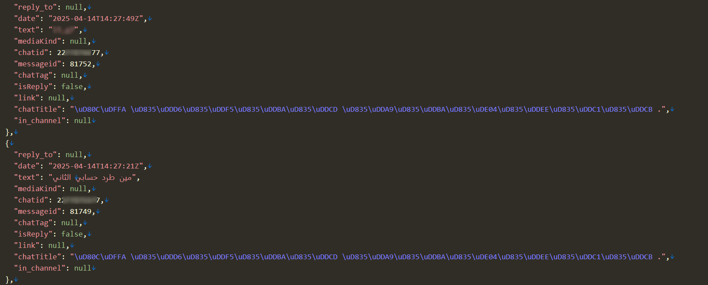
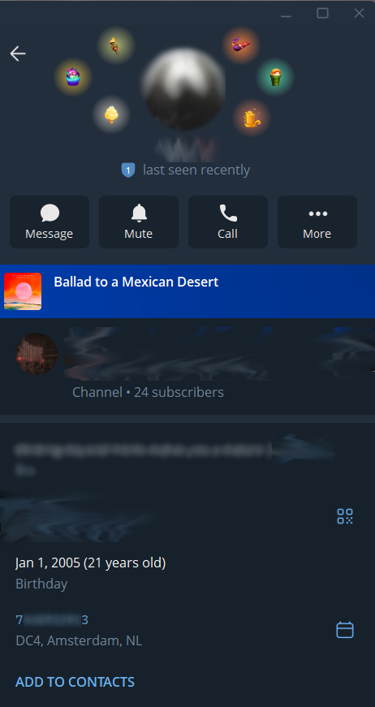
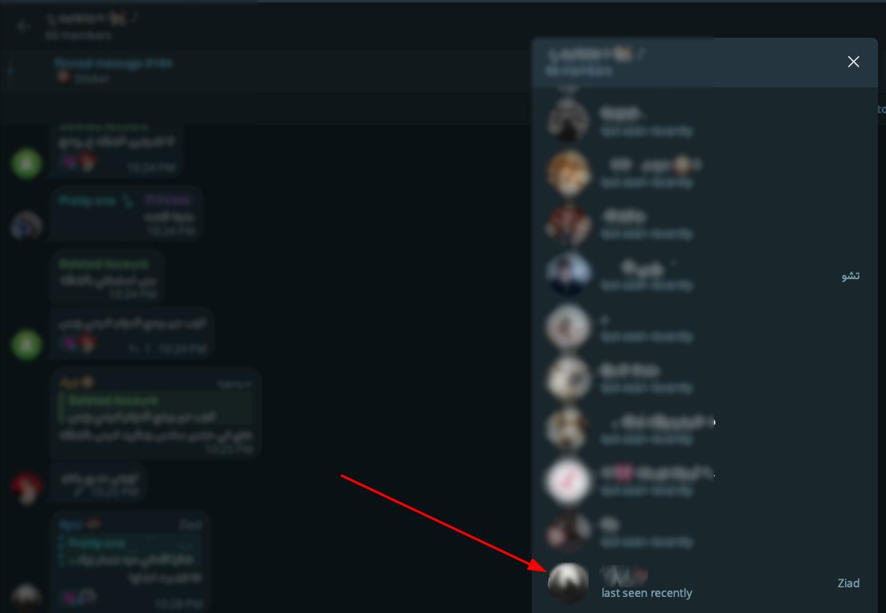

Tracing a Threat Actor Through Telegram's Blockchain Gifts🔗
1. Overview🔗
While tracking a Telegram account belonging to a threat actor, the account was found to be active in several private groups where the actor was advertising unauthorized access to government systems.
While going through the actor's old messages, something interesting appeared that gave a new lead. In one message, the actor asked:
"Who kicked my other account?" "@████"

Then he shared the username of that account. A few moments later, he sent another message:
"I'm Ziad."

At that point, it became clear that the threat actor was using more than one Telegram account. The second account also appeared more important. Instead of hiding behind a nickname like many threat actors do, the person behind it introduced himself as Ziad, a real first name.
2. Tracking the Second Account🔗
After discovering the second account, it was investigated using the standard tools typically relied on during Telegram investigations: Funstat, TeleSint, TeleScan, and TGDB.
2.1 Funstat🔗
The first thing that caught the eye was the account's activity timeline. It had been active since 2024, while the primary account used to advertise unauthorized access to government systems was only created near the end of 2025.
That was the first clear indication that this wasn't just a secondary account it was most likely the actor's original Telegram account.
However, no messages could be retrieved. The actor had subscribed to Funstat's Hide Data feature, which prevents message history from being accessed through the Bot. This told something important on its own: the actor was aware of how Funstat works and had taken steps to protect himself.

Funstat currently offers two privacy plans:
- Ninja -> Hides groups, channels, messages, and analysis.
- Shadow -> Hides everything except basic statistics, rankings, and gifts.
Both plans include one notable feature: whenever someone searches for a protected profile and clicks on a hidden section, the account owner receives a notification:
"ID \\\*12######7 was interested in you."

The bot then encourages the account owner to pay again to reveal more information about the person who searched for them.
OPSEC Note: Never use your personal Telegram account during investigations like this. If your target is using Funstat's protection, clicking on a hidden section will notify them that someone is looking. Always use a fresh or throwaway account when interacting with services like Funstat.
2.2 TeleSint🔗
Since Funstat didn't give me much to work with, I decided to move on to TeleSint.
TeleSint returned the account's name history, showing the display name had been changed 33 times over the years.

What mattered was not the number of changes, but what the very first display name had been.
The earliest recorded name on the account was simply "Z".
Considering the actor had already introduced himself as "Ziad" from his other account, this was another small but consistent detail supporting the link between the two accounts. TeleSint could not provide message history or group data, so the investigation moved on.
2.3 TeleScan🔗
TeleScan returned only an estimated registration date for the account, which was already known. No messages, groups, or additional details were retrievable.

2.4 TGDB🔗
Unlike the previous tools, TGDB provided one additional data point: the account's username history.

3. The Technique: NFT Gift Tracing as an OSINT Pivot🔗
When a target actively protects their Telegram account by hiding their messages, deleting their history, and using privacy bots, the usual investigation tools hit a wall. But there's one thing they can't control: the blockchain.
Every Telegram NFT Gift is minted on the TON blockchain. That means every transfer, every sender, every receiver is recorded permanently in a public ledger. No privacy plan covers it. No deletion reaches it. The target can disappear from every OSINT bot and still leave a visible trail on-chain through every gift they've ever sent or received.
This is what makes the technique work. Instead of trying to reach the target directly, you reach them through the network they unknowingly built around themselves.
Check their profile. If gifts are present, an on-chain record exists. That's your entry point.
Pull the full transaction history and identify who they've exchanged gifts with. Focus on the accounts with the highest frequency, those are the ones most likely to be real contacts.
Run OSINT on those accounts. You're not targeting them, you're looking for groups they share with the target. If even one of those contacts left their history unprotected, the target's messages in those shared groups become fully accessible.
The actor protects himself. He doesn't protect the people around him. That gap is where the investigation continues.
4. Pivoting to NFT Gifts🔗
At this point, the standard Telegram OSINT toolset had been exhausted without delivering important results. A different approach was needed.
While reviewing the account profile, it was noticed that the account owned several Telegram NFT Gifts. That small detail ended up opening a completely new path in the investigation.

4.1 How Telegram NFT Gifts Work🔗
When a regular Telegram Gift is upgraded to an NFT, it is minted on the TON blockchain. From that moment, the gift is no longer just a decorative element on a Telegram profile. It becomes a blockchain asset with a public transaction history that stays forever.
This difference is critical from an OSINT point of view. Unlike Telegram messages, which can be deleted or hidden behind paid privacy plans, blockchain records cannot be modified or removed. Every transfer, every owner, and every transaction timestamp is permanently recorded and accessible to anyone.
This meant the investigation no longer had to depend on Telegram OSINT tools. Instead, the trail could be followed on-chain, where the actor had no ability to erase his footprints.
5. Tracing the NFTs on the Blockchain🔗
5.1 Tonviewer🔗
The first tool used was Tonviewer, a TON blockchain explorer that allows inspection of NFT assets including the current owner, the full transfer history, minting details, and the wallet currently holding the asset. Since all of this data is stored on the blockchain, it is publicly accessible and cannot be removed.

5.2 see.tg🔗
A more practical tool for this specific investigation was see.tg. It supports searching directly by Telegram username or user ID and presents the account's full NFT activity in a readable format, including gifts that are no longer visible on the user's public profile.

Using see.tg, every NFT Gift the account had ever received or sent was collected and mapped. All Telegram usernames involved in those transactions were recorded, then analyzed to determine which accounts had the most frequent interactions with the target.
Accounts with the highest number of gift exchanges likely shared an actual relationship with the threat actor, whether as friends or trusted contacts.
6. Mapping the Actor's Network Through Gift Exchanges🔗
After mapping all accounts that had exchanged NFT Gifts with the target, a new cluster of connected accounts emerged.

Rather than continuing to focus on the threat actor's own account directly, the investigation shifted to the people around him.
The reasoning was simple. Even if the threat actor had successfully hidden his own Telegram activity using paid privacy tools, the people he interacted with might not have taken the same precautions. They were the weak link in his operational security.
Each account from the gift exchange map was searched using Funstat and the other Telegram OSINT tools. The goal at this stage was not to profile those accounts individually, but specifically to identify Telegram groups they shared with the threat actor.
If shared groups could be found, there was a good chance that messages posted by the threat actor, messages he believed were deleted or hidden, would still be accessible through the records of other group members.
One by one, each account was checked until several mutual groups were identified.

7. Results🔗
7.1 What the Groups Revealed🔗
The actor was listed as an admin in several of the mutual groups. His display name in all of them was "Ziad" the same name that came up twice before: once in a direct message from his primary account, and once as the initial "Z" on his older account.
At this point it was clear these were the same person.
Since the people around him hadn't made the effort to protect their accounts, their group histories were completely open. And since the actor was in those groups, his own messages were there too messages he probably thought had disappeared.
We collected those messages across all the shared groups. That gave us his activity timeline, the people he talked to, and the things he discussed. Everything Funstat's privacy plan was supposed to hide ended up being recoverable through the people he trusted.
7.2 OPSEC Mistakes🔗
This actor clearly knew what he was doing. He paid for Funstat's privacy plan, used a separate account for public activity, and tried to keep a low profile. But he still made some basic mistakes.
The whole investigation started because he revealed his second account in a group message and introduced himself by his real first name. One careless moment gave us both a second account and a real identity.
His own account was locked down, but the people he interacted with weren't. Since he had exchanged NFT gifts with them, we could trace those connections and access their open group histories which included his own messages.
Every gift sent or received on the TON blockchain is public and cannot be deleted. By using gifts to connect with close contacts, he unknowingly created a permanent map of his trusted network on the blockchain.
He used the same name and initial across accounts and held admin roles in multiple groups. That consistency made it easy to link everything together.
7.3 What Came Next🔗
By the end of this phase, we had a confirmed name, a list of connected accounts, and a full archive of his messages collected from the shared groups.
That was enough to move into the main investigation: tracking his activity, understanding who he worked with, and mapping out his operations in detail.
The NFT gift trail was the starting point that made all of it possible.
8. Tools Used🔗
| Tool | Purpose | Result |
|---|---|---|
| Funstat | Message history, group activity | Blocked by paid privacy plan |
| TeleSint | Name history, group data | Name history only (33 changes, first name: "Z") |
| TeleScan | Account registration date | Registration date only |
| TGDB | Username history | Username history retrieved |
| Tonviewer | On-chain NFT inspection | Owner, transfer history, wallet details |
| see.tg | NFT gift activity by username | Full gift transaction history, sender/receiver usernames |